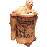

Mineral Grimoire

AlabasterCrystal System
Cleavage
Sun Safe?
Notes/Warnings
Type of Calcite. Connects known with unknown, bridge to future or alternative realities
Luster
Fracture
Mohs Hardness
Water Safe?
Correspondences12
Dreams1
Appearance
Creamy to pinkish white, veined opaque, sparkling stone
Origin
Egypt, Europe, UK
Attributes
Alabaster connects the known with the unknown, the seen with the unseen, acting as a bridge to the future or alternative realities. It helps you journey through multi-dimensions and time-frames. The Egyptians crafted statues and lined shrines with this sparkling material which they believed served as a bridge to the stars and the gods. Alabaster diminishes the internal anger and emotional blockages which underlie disease, particularly those of the heart and arteries.
Healing
Alabaster reportedly helps with circulatory system disorders.
Position
Place, grid or disperse gem essence as appropriate.